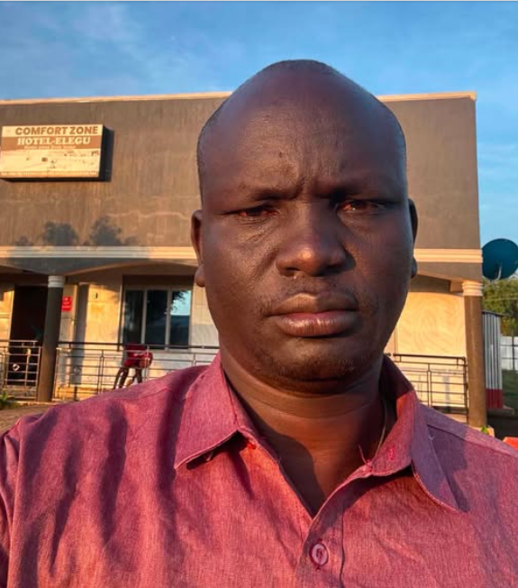

EXECUTIVE INTELLIGENCE SUMMARY
Forensic investigation of the 994 harvested posts reveals that Watchdog Press operates as an asymmetric diaspora-based political pressure channel. Technically, the Facebook presence is structured as a Personal Profile in Professional Mode (User ID:
100092417213397) owned and controlled by Emmanuel Malual Makuach. However, content operations, political protection, and security targeting prove that it functions through an interconnected operational triad consisting of Malual, Kanybil Noon Deng, and Michael Wetnhialic.
Primary Administrator
Emmanuel Malual Makuach
Sole Master Credential Holder. Exiled investigative journalist (former Chief Editor of The Juba Mirror). Operates publishing infrastructure from Kenya/Kakuma with Baltic VPN egress.
Core Content Partner
Kanybil Noon Deng
Civil Society & Investigative Source. Ex-CEPO human rights coordinator (117 days in Blue House). Syndicates major leaks, corruption exposés, and local governance attacks.
Strategic Commentator
Michael Wetnhialic
Political Analyst & Defense Voice. Prominent advocate for detained former ISB Director General Gen. Akol Koor Kuc. Authors major open letters against NSS DG Gen. Akech Tong.
SUBJECT 1: PRIMARY ADMINISTRATOR (EMMANUEL MALUAL MAKUACH)

PRIMARY ADMIN // 100% CONTROL
EXILED JOURNALIST // KENYA (UNHCR)
Full Legal Name
Emmanuel Malual Makuach
Known Operating Aliases
Kuach Moses / Kuach Deng Mou / Malual Makuach
Gender & Profile Class
Male (FB System Pronoun: "updated his profile picture")
Origin & Clan Lineage
Lakes State // Ciec Manyiel Clan (Yirol / Awerial)
Professional Background
Exiled Journalist / Former Chief Editor (The Juba Mirror)
Current Physical Base
Kakuma Refugee Camp / Nairobi / Eldoret, Kenya
Primary Direct Email
malualmakuach77@gmail.com
Direct Telephony / Secondary
+211 917 624 594 / kuachdengmou@gmail.com
SUBJECT 2: CORE CONTENT PARTNER (KANYBIL NOON DENG)
INVESTIGATIVE CONTRIBUTOR
EX-CEPO // BLUE HOUSE SURVIVOR
Full Legal Name
Kanybil Noon Deng (Kanybil Noon)
Role on Watchdog Press
Regular Syndicated Author & Exclusive Source
Civil Society Background
Former Senior Coordinator, CEPO (Human Rights Activist)
NSS Detention History
117 Days in Blue House (June–Oct 2020 without trial)
Primary Investigation Focus
Tonj $1.28M Peace Fund, SG Akol Paul, Warrap Gov. Bol Wek
Current Operational Base
Nairobi, Kenya / Regional Diaspora
Associated Financial Rails
Safaricom M-Pesa (Kenya Mobile Money)
NSS Threat Status
Named on J1/NSS Extradition List (Sarova Hotel Room 101)
POST #517 // OCTOBER 5, 2026
WATCHDOG PRESS EMERGENCY MEDICAL CROWDFUNDING
"Public Appeal for Lifesaving Assistance for ill Wife Of Our Brother Kanybil Noon Deng... We humbly appeal on behalf of our brother, Kanybil Noon, whose wife is battling a critical health condition. She recently underwent surgery, and her recovery remains fragile... Those wishing to help can send support directly to Kanybil via M-Pesa... With gratitude, Management and Concerned Well-Wishers."
POST #549 & #567 // SEPTEMBER 2026
SIGNED EXPOSÉS & EDITORIAL OWNERSHIP
"I Kanybil Noon, take full responsibility for publishing an article regarding the cheque issued to Legit Investment Ltd... Founder is a longtime friend... As an advocate for transparency and legitimate wealth creation, I have no reason to oppose someone I know has been struggling..."
SUBJECT 3: STRATEGIC POLITICAL COMMENTATOR (MICHAEL WETNHIALIC)
STRATEGIC COMMENTATOR
PRO-AKOL KOOR ADVOCATE
Full Legal Name
Michael Wetnhialic
Role on Watchdog Press
Key Political Commentator & Defense Voice
Community / Regional Origin
Warrap State // Greater Tonj Community
Primary Political Cause
Leading Advocate for detained Gen. Akol Koor Kuc
Key Opponents / Targets
NSS DG Gen. Akech Tong Aleu, Aleu Ayieny, Akuac Wol
Current Operational Base
Nairobi, Kenya / Regional Diaspora
Platform Protection
Directly defended by Watchdog Press against state trolls
NSS Threat Status
Named on J1/NSS Extradition List (Sarova Hotel Room 101)
POST #729 // JULY 24, 2026
THE GEN. AKOL KOOR DEFENSE MANIFESTO
"This post was originally made by Michael Wetnhialic... In an open letter addressed to General Akech Tong Aleu and Honorable Aleu Ayieny Aleu: 'Do not let this problem, or the case of General Akol Koor, become attached to your honorable names and families. Do not let your brother, General Akol Koor, suffer or die in your hands... Maybe there is an invisible move by some people to eliminate Akol Koor Kuc using your names.'"
POST #580 // SEPTEMBER 9, 2026
WATCHDOG PRESS DEFENDS MICHAEL WETNHIALIC
"Hehehe 😂😂 Akuac have unprovoked attacked wrong people such as Michael Wetnhialic and others who have nothing to do with our page... Akuac Wol, we know that you are trying to get into conflict with us... Soon, however, you will feel it. Expect our salty statement on you soon!"
SECTION 4: THE J1/NSS EXTRACTION TARGET LIST (APRIL 2026)
HARVESTED POST #967 / #474 // APRIL 7, 2026
SAROVA HOTEL (ROOM 101) EXTRACT
"Serious concerns have emerged regarding an alleged plan involving Deputy First Lady Gregory Vasily and Hon. Adut Salva Kiir Mayardit to target individuals for arrest or assassination. The individuals named include activist Kanybil Noon, journalist Emmanuel Malual Makuach, and Michael Wetnhialic... Multiple testimonies indicate that Gregory Vasily and Adut Salva Kiir have jointly financed a mission to pursue these individuals... Acuil Malei departed Juba on April 6, 2026, and travelled to Nairobi. He is currently said to be staying in Room 101 at the Sarova Hotel in Central Nairobi... with authorized Interpol arrest warrants targeting individuals suspected of links to Watchdog Press..."
| Operation Parameter | Intelligence Detail | Strategic Relevance |
|---|---|---|
| Financiers / Sponsors | Deputy First Lady Gregory Vasily & Hon. Adut Salva Kiir Mayardit | Direct J1 presidential family involvement in silencing the platform |
| Lead Field Operative | Acuil Malei (Arrived Nairobi April 6, 2026) | Operative tasked with coordinating with Kenyan local assets |
| Safehouse Location | Sarova Hotel, Room 101, Central Nairobi, Kenya | Forward operating node identified and publicly exposed by the page |
| Joint Target Triad | Emmanuel Malual Makuach, Kanybil Noon, Michael Wetnhialic | NSS treats all three as the co-directors of Watchdog Press |
| Mission Objective | Abduction / Assassination & Rendition to Juba (Blue House) | Confirms high-value classification assigned by South Sudan intelligence |
SECTION 5: OPERATIONAL COMPARATIVE MATRIX
| Parameter | Emmanuel Malual Makuach | Kanybil Noon Deng | Michael Wetnhialic |
|---|---|---|---|
| Technical Role | Sole Admin & Account Holder | Syndicated Leaks / Content | Political Commentator |
| Account Access | Master Password & MFA | External Submission / Cross-post | External Submission / Cross-post |
| Location Base | Kakuma Refugee Camp / Nairobi | Nairobi / Regional Diaspora | Nairobi / Regional Diaspora |
| Legal Protection | UNHCR Mandate (Kenya) | Civil Society Defense Networks | Diaspora Political Networks |
| Key Targets | NSS DG Akech Tong, Bol Mel, NILEPET | SG Akol Paul, Gov. Bol Wek, Deng Wal | Akuac Wol, Akech Tong, Aleu Ayieny |
| Primary Agenda | Whistleblowing on financial theft | Human rights & anti-corruption | Defense & release of Gen. Akol Koor |